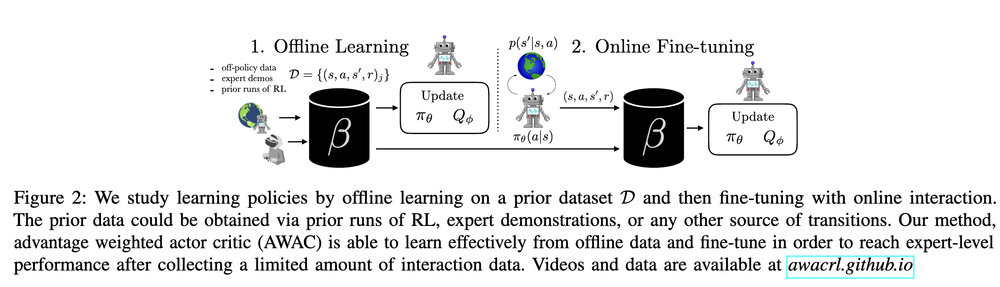
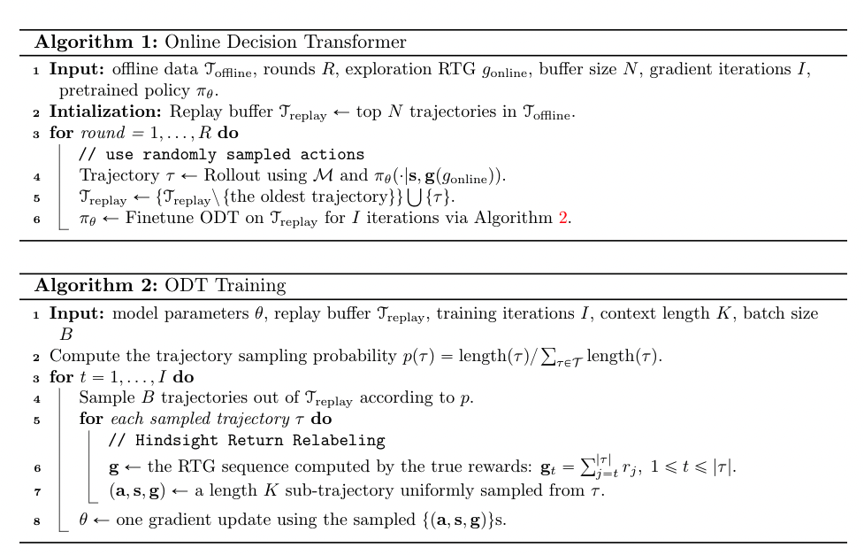
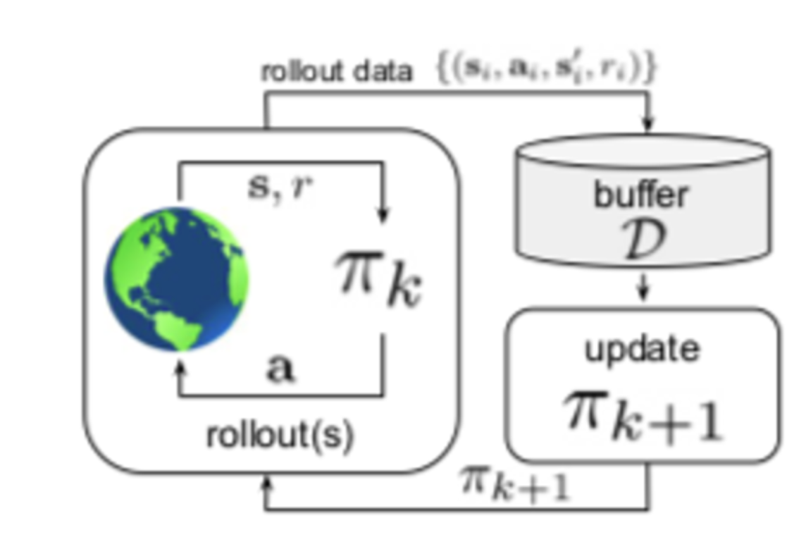
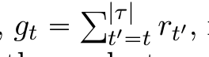

[TOC]
- Title: Online Decision Transformer
- Author: Qinqing Zheng
- Publish Year: Feb 2022
- Review Date: Mar 2022
Summary of paper
Motivation
the author proposed online Decision transformer (ODT), an RL algorithm based on sequence modelling that blends offline pretraining with online fine-tuning in a unified framework.
ODT builds on the decision transformer architecture previously introduced for offline RL
quantify exploration
compared to DT, they shifted from deterministic to stochastic policies for defining exploration objectives during the online phase. They quantify exploration via the entropy of the policy similar to max-ent RL frameworks.
behaviour cloning term
adding a behaviour cloning term to offline RL methods allows the porting of off-policy RL algorithm to the offline setting with minimal changes.
offline learning and online fine-tuning

the policy is extracted via a behaviour cloning step that avoid of out of distribution actions.
some improvements on the offline-online settings
- Lee et al. (2021) tackles the offline-online setting with a balanced replay scheme and an ensemble of Q functions to maintain conservatism during offline training.
- Lu et al. (2021) improves upon AWAC (Nair et al., 2020), which exhibits collapse during the online fine tuning stage, by incorporating positive sampling and exploration during the online stage.
- the author claimed that positive sampling and exploration are naturally embedded in ODT method
why offline trajectories has limitations
offline trajectories might not have high return and cover only a limited part of the state space.
modifications from decision transformer
- learn a stochastic policy (a Gaussian multivariate distribution with a diagonal covariance matrix to model the action distribution conditioned on states and RTGs)
- quantify exploration via the policy entropy
Algorithm

Some key terms
offline RL
an agent is trained to autoregressively maximize the likelihood of trajectories in the offline dataset.
policies learned via offline RL are limited by the quality of the training dataset and need to be finetuned to the task of interest via online interactions.
transformer for RL
it focuses on predictive modelling of action sequences conditioned on a task specification (target goal or returns) as opposed to explicitly learning Q-functions or policy gradients.
off-policy vs on-policy vs offline reinforcement learning
the process of reinforcement learning involves iteratively collecting data by interacting with the environment. this data is also referred as experiences.
all these methods fundamentally differ in how this data (collection of experiences) is generated
On-policy RL
- typically the experience are collected using the latest learned policy, and then using that experience to improve the policy.
- the policy pi_k is updated with data collected by pi_k itself
- example: SARSA, PPO, TRPO
Off-policy RL
- in the classical off-policy setting, the agent’s experience is appended to a data buffer (also called replay buffer)
- and each policy pi_k collects additional data, such that the replay buffer is composed of sample from pi_0, pi_1,… to pi_k, and all of this data is used to train an updated new policy pi_k+1.

Offline RL
- offline RL: those utilise previously collected data, without additional online data collection.
bootstrap method
The bootstrap method is a statistical technique for estimating quantities about a population by averaging estimates from multiple small data samples.
off-policy bootstrapping error accumulation
https://arxiv.org/pdf/1906.00949.pdf
Off-policy reinforcement learning aims to leverage experience collected from prior policies for sample-efficient learning. However, in practice, commonly used off-policy approximate dynamic programming methods based on Q-learning and actor-critic methods are highly sensitive to the data distribution (out of distribution actions), and can make only limited progress without collecting additional on-policy data. As a step towards more robust off-policy algorithms, the author study the setting where the off-policy experience is fixed and there is no further interaction with the environment. the author identified bootstrapping error as a key source of instability in current methods. Bootstrapping error is due to bootstrapping from actions that lie outside of the training data distribution, and it accumulates via the Bellman backup operator.
return to go (RTG)
return to go of a trajectory $\tau$ at timestep t,

is the sum of future reward from that timestep.